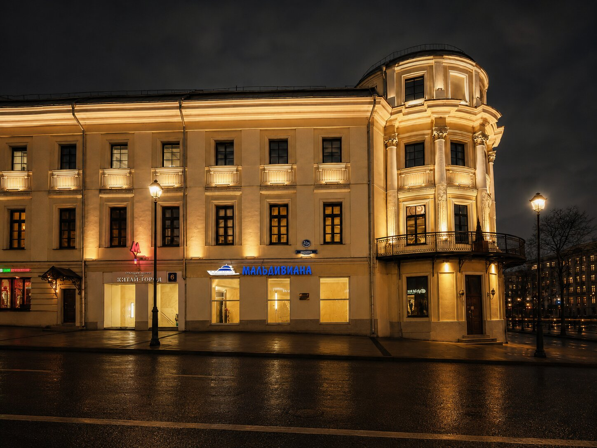
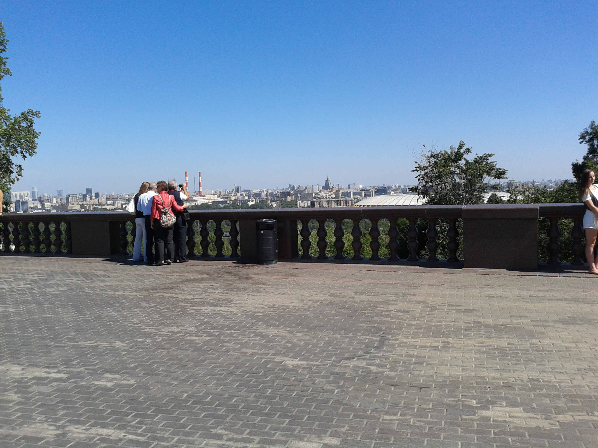
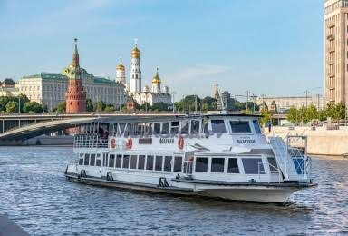
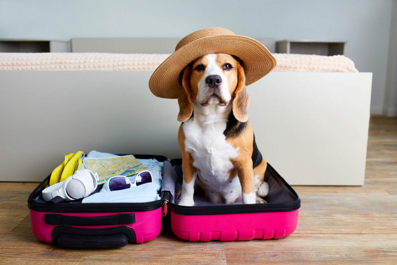
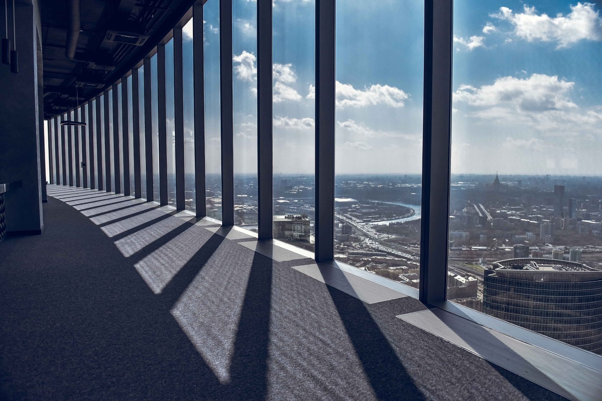

Пятница, 10 июля
Лужники → Воробьёвы горы → Сити
Главный день — запад Москвы, река и небоскрёбы
🚕
Такси Кубинка → Моросейка 2/15 · ~1–1,5 ч

11:00
Моросейка 2/15 — Заселение
Прибытие в отель в центре Москвы. Оставить вещи, передохнуть и выходим на маршрут.
🏨 Отель
🚕
Такси Моросейка → Лужники · 25–40 мин

12:40 – 14:00
Зиплайн в Лужниках 🪂
Полёт на зиплайне над стадионом. Рядом — Воробьёвы горы, не надо возвращаться через всю Москву.
🪂 Активность

14:00 – 14:30
Смотровая — Воробьёвы горы
Лучший вид на Москву: Москва-Сити, Лужники, Москва-река и центр города.
📸 Вид
- Москва-Сити
- Лужники
- Москва-река
- Центр города

15:00 – 16:30
Теплоход «Флагман» 🚢
Маршрут: Воробьёвы горы → Китай-город. Идеально — начинаем на западе, заканчиваем у отеля.
🚢 Теплоход
- Лужники
- Нескучный сад
- Парк Горького
- Храм Христа Спасителя
- Кремль и Зарядье

16:30 – 18:30
Отдых в отеле
Возвращение на Моросейку. Отдых перед вечерней программой.
🏨 Отдых
🚕
Такси Моросейка → Москва-Сити

18:30 – 21:00
PANORAMA360 — Башня Федерация
Лучшее время — вечер. Дневная Москва, закат и включение подсветки города.
🌆 Вид
- Смотровая на 89-м этаже
- Закат над Москвой

Ночь
Моросейка 2/15
Возвращение в отель. Завтра — последний день.
🏨 Отель